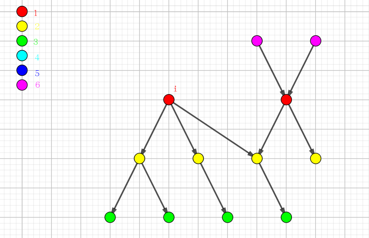
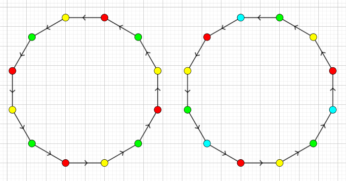
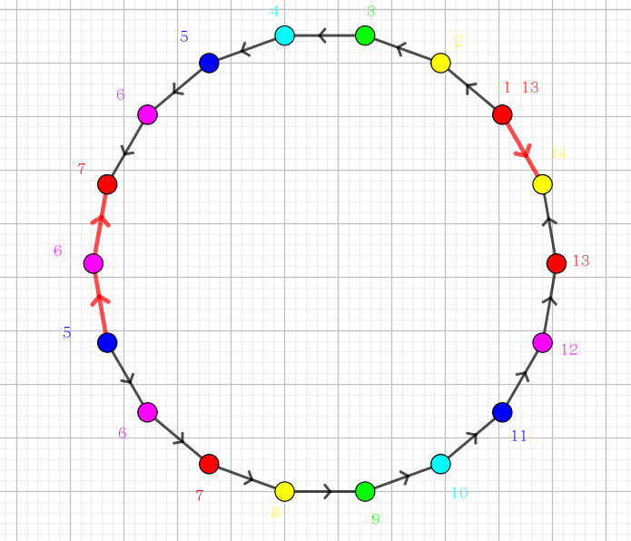

一年一度的假面舞会又开始了，scx 也兴致勃勃的参加了今年的舞会。
今年的面具都是主办方特别定制的。每个参加舞会的人都可以在入场时选择一个自己喜欢的面具。每个面具都有一个编号，主办方会把此编号告诉拿该面具的人。
为了使舞会更有神秘感，主办方把面具分为 $k$ ($k \geq 3$) 类，并使用特殊的技术将每个面具的编号标在了面具上，只有戴第 $i$ 类面具的人才能看到戴第 $i+1$ 类面具的人的编号，戴第 $k$ 类面具的人能看到戴第 $1$ 类面具的人的编号。
参加舞会的人并不知道有多少类面具，但是 scx 对此却特别好奇，她想自己算出有多少类面具，于是她开始在人群中收集信息。
scx 收集的信息都是戴第几号面具的人看到了第几号面具的编号。如戴第 $2$ 号面具的人看到了第 $5$ 号面具的编号。scx 自己也会看到一些编号，她也会根据自己的面具编号把信息补充进去。
由于并不是每个人都能记住自己所看到的全部编号，因此，scx 收集的信息不能保证其完整性。现在请你计算，按照 scx 目前得到的信息，至多和至少有多少类面具。
由于主办方已经声明了 $k \geq 3$，所以你必须将这条信息也考虑进去。
第一行包含两个用空格分隔的正整数 $n, m$ ($n \leq 10^5, m \leq 10^6$)，表示主办方准备的面具个数和 scx 收集的信息条数。
接下来 $m$ 行，每行包含两个用空格分开的正整数 $a, b$，表示戴第 $a$ 号面具的人看到了第 $b$ 号面具的编号。相同的数对 $a, b$ 在输入中可能出现多次。
包含两个整数，第一个数为最大可能的面具类数，第二个数为最小可能的面具类数。
如果无法将所有的面具分为至少 $3$ 类，使得这些信息都满足，则认为栋栋收集的信息有错误，输出两个 -1。
能发现戴面具的人能相互看得到的关系，可以用一张有向图来表示。题目的意思就是给这张图染色，满足若一条边的起点的颜色为 $i$，则终点的颜色就为 $(i + 1) \bmod k$。求满足这个条件的 $k$ 的最大值和最小值。
如果原图化为无向图后没有环，则它应该由若干个连通分量组成，每个连通分量是一个像树一样的玩意儿，先考虑最大值 (显然不能是 $+ \infty$，因为每个颜色至少需要一个点)，我们可以假定其中某个点的颜色为 $1$，如下图：
假如说没有模意义，则这么假定后，这棵 "树" 中所有点的颜色都是可以确定的，比如上图中粉色的点的颜色就是 $0$，绿色点的颜色就是 $3$，以此类推。
可以看出，上面的这棵 "树" 只有 $4$ 种颜色，又因为每个颜色至少需要一个点，故这个模 $k$ 是不能超过 $4$ 的，上图中的最大值即为 $4$。类似地，对于一般的 "树" 把正反边都遍历后也可以得到这棵 "树" 的深度，最大值就是它。最小值呢？显然是 $3$ 了，只要它们都模 $3$ 即可。
对于森林的话，最大值就是每棵树的颜色都不一样，于是把每棵树的答案加起来即可。最小值，依然是 $3$。
(什么你说深度和小于 $3$？当然无解啦！)
接下来考虑 "环"。如果出现了 "环"，那么刚才 "树" 的限制条件就不需要管了。先从最简单的有向环谈起。
比如上图中出现了一个 $12$ 元环，依旧假设某个点的颜色为 $1$ (颜色图例见上一幅图)，在不考虑模意义，依次计算下去，绕一圈后得到那个点的颜色应该是 $1 + 12 = 13$，而实际上这个点的颜色是 $1$，因此在模 $k$ 意义下有 $1 + 12 \equiv 1 \pmod k$，换句话说就是 $k \mid 12$。
类似地，对一般的 $n$ 元环，都有 $k \mid n$。那么，假如说图中环的长度有 $C_1, C_2, \cdots$，则我们所要求的 $k$ 需要整除 $C_1, C_2, \cdots$，亦即 $k \mid \gcd(C_1, C_2, \cdots)$。
由于并不是所有的环都具有同一方向，未免会有一些奇奇怪怪的环——有点边是反向的。这种环显然也是对答案造成影响的，比如 $1 \to 2 \to 3 \to 4 \to 5 \gets 6 \gets 1$，玩一玩发现突然就无解了。
比如上图中的一个 $18$ 元 "环"。不过这也并不是很难，我们还是假定一个点的颜色为 $1$，在不考虑模意义的情况下计算下去，正向边 $+ 1$，反向边 $- 1$，兜一圈后发现那个点的颜色又变成了 $13$，因此在模 $k$ 意义下有 $13 \equiv 1 \pmod k$，即 $k \mid 12$。
当然，有的 "环" 可能是没有用的，因为你可能会发现兜了一圈后这个点的颜色还是 $1$，那就扔掉它吧。(比如 $1 \to 2 \to 3 \to 4 \gets 5 \gets 6 \gets 1$，注意箭头方向)
其实这种编码过程可以选定一个起点，然后上一个 bfs，然后如果发现同一个点被访问了两次，那么 $k$ 就应该整除两次编码的差 (当然，如果是 $0$ 就不用管了，反正啥都整除 $0$)，最后取个 $\gcd$ 即可。
由于 $\gcd$ 是 Greatest(最大) Common Divisor，那么这样求出来的答案理所应当就是最大值。那最小值呢？可不是 $3$ 喽，是那个最大值的最小的 $\geq 3$ 的因子。
同理，深度小于 $3$ 就嗨皮地输出 -1 -1，时间复杂度 $O(n)$。
#include <bits/stdc++.h>
#define N 100034
#define M 2048808
#define gcd __gcd
using namespace std;
int V, E, Es = 0, res = 0;
int u, v, i, tree = 0;
int to[M], first[N], next[M];
int id[N], dist[N], que[N];
inline void up(int &x, const int y) {x < y ? x = y : 0;}
inline void down(int &x, const int y) {x > y ? x = y : 0;}
inline void addedge(int u, int v){
to[++Es] = v; next[Es] = first[u]; first[u] = Es;
to[++Es] = u; next[Es] = first[v]; first[v] = Es;
}
void bfs(int si){
int h = 0, t = 1, i, x, y, D, Dmin = 0, Dmax = 0;
que[1] = si; dist[si] = 0; id[si] = 1;
for(; h < t; ){
x = que[++h];
for(i = first[x]; i; i = next[i]){
y = to[i];
D = dist[x] - (-(i & 1) | 1); // (-1)^i
if(id[y]) res = gcd(res, D - dist[y]);
else{
dist[y] = D;
down(Dmin, D); up(Dmax, D);
que[++t] = y; id[y] = t;
}
}
}
tree += ++Dmax - Dmin;
}
int main(){
scanf("%d%d", &V, &E);
for(i = 1; i <= E; ++i){
scanf("%d%d", &u, &v);
addedge(u, v);
}
for(i = 1; i <= V; ++i)
if(!id[i]) bfs(i);
if(res){
res = abs(res);
if(res < 3) res = i = -1;
else for(i = 3; res % i; ++i);
}else
tree < 3 ? res = i = -1 : (res = tree, i = 3);
printf("%d %d\n", res, i);
return 0;
}
坑1：要理解题目的染色本质。题目的本质就是选取合理的模数使得相同的点具有相同的颜色，因此我们抛开模意义地染色，最后反推出模数的性质，题目自然就迎刃而解了。
坑2：计算 "树" 深度可以用最大编码减去最小编码，最后别忘记 $+ 1$。